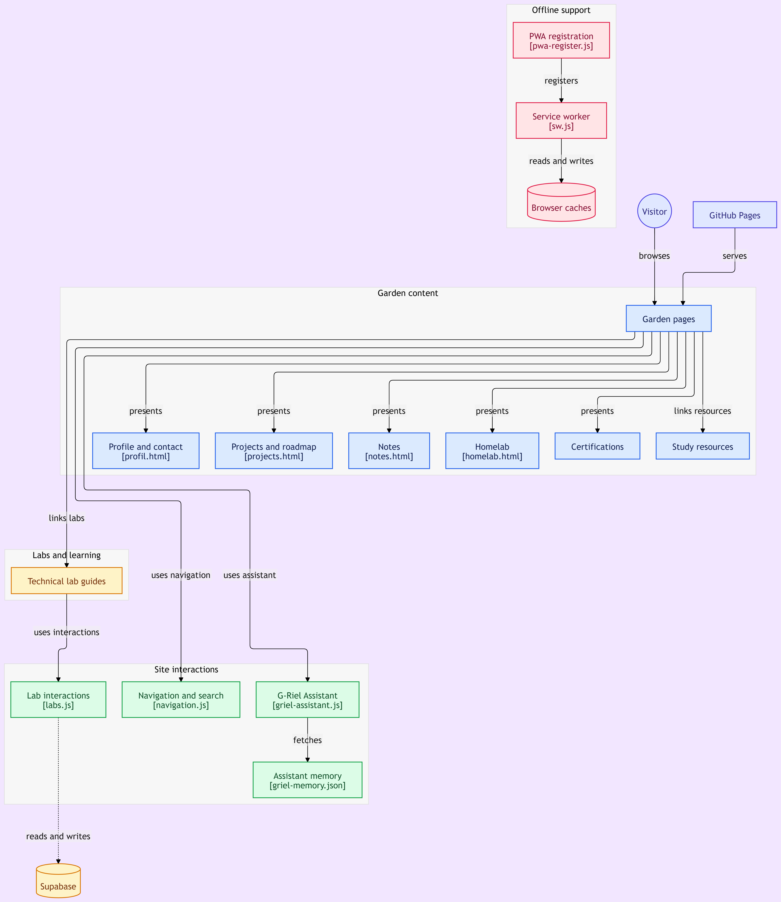
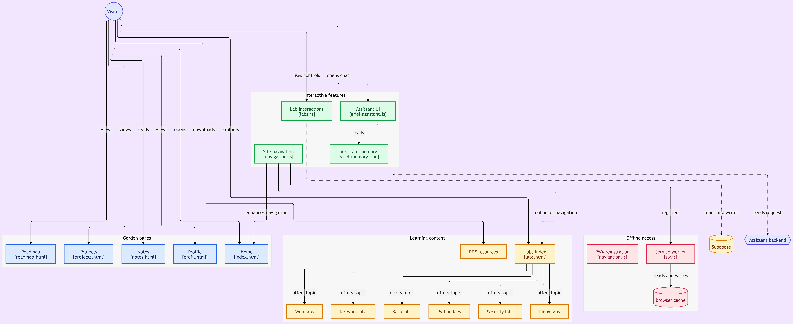
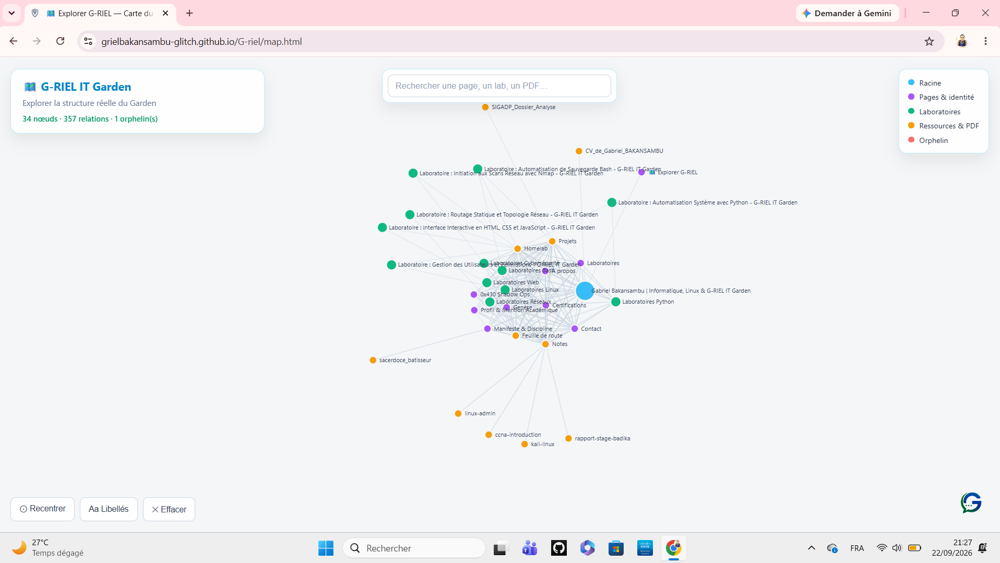
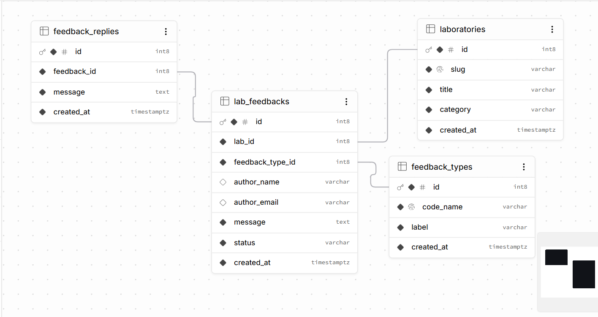
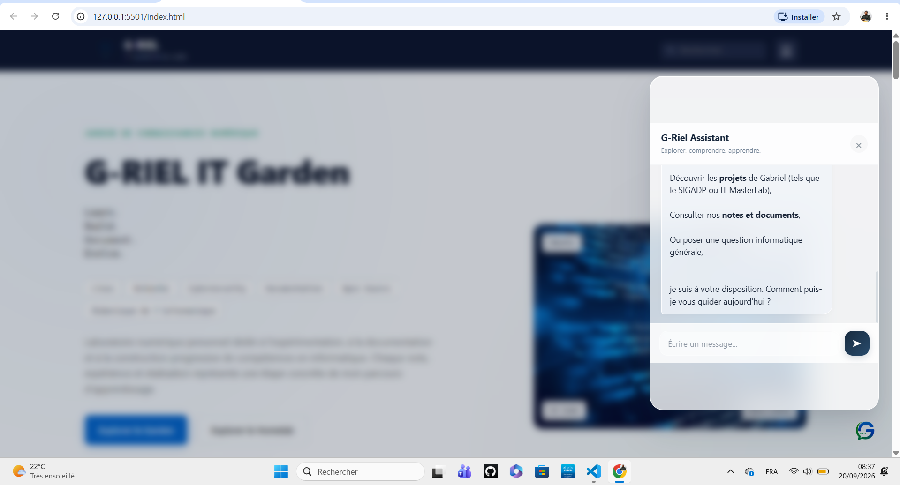
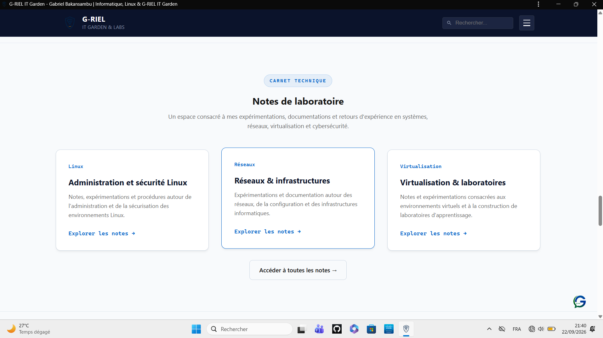

Documentation technique
Comprendre le jardin
Cette page présente la structure, les composants, les choix techniques et les mécanismes qui font fonctionner G-RIEL IT Garden.

Introduction
Un jardin numérique à comprendre par sa structure
G-RIEL IT Garden est un espace numérique personnel consacré à l’apprentissage, à l’expérimentation, à la documentation et à la transmission autour de l’informatique et des technologies.
Le site ne se limite pas à un ensemble de pages statiques. Il rassemble des contenus, des laboratoires pratiques, des ressources, des données structurées, une cartographie du site, une Progressive Web App et un assistant intégré.
Cette documentation permet donc de comprendre comment ces différents éléments s’articulent, quelles responsabilités ils assurent et quelles limites doivent être prises en compte.
01
Identité et rôle du Garden
G-RIEL IT Garden fonctionne comme un jardin numérique personnel : les connaissances, les expériences et les projets y sont organisés progressivement plutôt que présentés comme un simple portfolio.
Connaissances
Notes, ressources pédagogiques et contenus techniques constituent la base documentaire du Garden.
Expérimentation
Les laboratoires permettent de transformer les notions étudiées en expériences pratiques.
Projets
Les projets présentent des réalisations, des réflexions de conception et des travaux menés individuellement ou en groupe.
Transmission
La documentation rend les démarches, les choix et les résultats consultables au-delà de l’expérience initiale.
02
Architecture générale
Le Garden repose principalement sur des pages web statiques, des fichiers JavaScript, des ressources structurées et quelques services externes utilisés pour des fonctions précises.
L’architecture ci-dessous représente les principaux flux entre le visiteur, les pages du Garden, les laboratoires, la cartographie, l’assistant, la PWA et les services de données.
flowchart TD subgraph group_presentation["Présentation du site"] node_landing["Entrée du jardin
index.html"] node_site_pages["Pages du jardin
pages HTML"] node_navigation["Navigation et recherche
navigation.js"] node_welcome["Écran d'accueil
welcome-smoke.js"] end subgraph group_knowledge["Jardin de connaissances"] node_notes["Collection de notes
notes.html"] node_projects["Collection de projets
projects.html"] node_resource_library["Ressources PDF
assets/PDF/"] end subgraph group_map["Cartographie"] node_map["Carte du Garden
map.html"] node_site_map[("Index structurel
site-map.json")] end subgraph group_labs["Laboratoires techniques"] node_lab_catalog["Catalogue des laboratoires
labs.html"] node_lab_guides["Guides des laboratoires
labs/*"] node_lab_runtime["Interactions des laboratoires
labs.js"] node_supabase_db[("Supabase
laboratories / feedback_types / lab_feedbacks")] end subgraph group_runtime["Services d'exécution"] node_assistant["Assistant G-RIEL
griel-assistant.js"] node_garden_memory["Contexte du Garden
griel-memory.json"] node_assistant_backend["Backend Assistant
Cloudflare Worker"] node_pwa_registration["Enregistrement PWA
pwa-register.js"] node_service_worker["Service Worker
sw.js"] node_browser_cache[("Cache du navigateur")] end node_visitor(("Visiteur")) node_visitor -->|"ouvre"| node_landing node_landing -->|"affiche"| node_welcome node_visitor -->|"consulte"| node_site_pages node_visitor -->|"recherche / ouvre le menu"| node_navigation node_navigation -->|"filtre les éléments présents"| node_site_pages node_visitor -->|"lit"| node_notes node_visitor -->|"explore"| node_projects node_visitor -->|"télécharge"| node_resource_library node_visitor -->|"explore"| node_map node_map -->|"lit"| node_site_map node_visitor -->|"ouvre"| node_lab_catalog node_lab_catalog -->|"oriente vers"| node_lab_guides node_lab_guides -->|"initialise"| node_lab_runtime node_lab_runtime -->|"crée / retrouve le laboratoire"| node_supabase_db node_lab_runtime -->|"enregistre le feedback"| node_supabase_db node_visitor -->|"interroge"| node_assistant node_assistant -->|"charge"| node_garden_memory node_assistant -->|"charge"| node_site_map node_assistant -.->|"envoie message + contexte"| node_assistant_backend node_assistant_backend -.->|"retourne la réponse IA"| node_assistant node_pwa_registration -.->|"enregistre"| node_service_worker node_service_worker -->|"met en cache"| node_browser_cache node_service_worker -->|"lit le cache"| node_browser_cache classDef toneBlue fill:#dbeafe,stroke:#2563eb,stroke-width:1.5px,color:#172554 classDef toneAmber fill:#fef3c7,stroke:#d97706,stroke-width:1.5px,color:#78350f classDef toneMint fill:#dcfce7,stroke:#16a34a,stroke-width:1.5px,color:#14532d classDef toneRose fill:#ffe4e6,stroke:#e11d48,stroke-width:1.5px,color:#881337 classDef toneIndigo fill:#e0e7ff,stroke:#4f46e5,stroke-width:1.5px,color:#312e81 classDef toneTeal fill:#ccfbf1,stroke:#0f766e,stroke-width:1.5px,color:#134e4a class node_landing,node_site_pages,node_navigation,node_welcome toneBlue class node_notes,node_projects,node_resource_library toneAmber class node_map,node_site_map toneTeal class node_lab_catalog,node_lab_guides,node_lab_runtime,node_supabase_db toneMint class node_assistant,node_garden_memory,node_assistant_backend,node_pwa_registration,node_service_worker,node_browser_cache toneRose class node_visitor toneIndigo

Comment lire cette architecture ?
Le visiteur constitue le point de départ. Il accède aux pages du Garden, consulte les ressources, explore les laboratoires ou utilise l’assistant.
Les différentes fonctions sont séparées selon leur responsabilité : les pages présentent le contenu, les scripts assurent les interactions, les fichiers JSON fournissent des informations structurées et les services externes prennent en charge certaines fonctions spécialisées.
Cette séparation permet de conserver une architecture relativement simple tout en laissant la possibilité de faire évoluer certaines parties indépendamment.
03
Cartographie du Garden
Le fichier map.html constitue une interface destinée à
explorer la structure réelle du Garden sous forme de graphe.
Il s’appuie sur site-map.json, un fichier structuré qui
décrit les ressources et les relations détectées dans le projet.
Ces valeurs correspondent à l’état de site-map.json au
moment de sa génération. Elles peuvent évoluer lorsque de nouvelles
pages ou ressources sont ajoutées au Garden.
La cartographie permet notamment de rechercher une ressource, de visualiser ses relations et d’identifier plus facilement les éléments isolés ou difficiles à retrouver.
Explorer la cartographie du Garden

04
Organisation du projet
Le projet est organisé autour de plusieurs catégories de fichiers, chacune correspondant à une responsabilité particulière.
| Élément | Rôle |
|---|---|
| Pages HTML | Présentation des contenus et des différentes sections du Garden. |
css/
|
Feuilles de style utilisées pour l’interface et les composants visuels. |
js/
|
Scripts responsables des interactions et des fonctionnalités dynamiques. |
labs/
|
Pages et contenus consacrés aux laboratoires pratiques. |
assets/
|
Images, icônes, documents PDF et autres ressources utilisées par le site. |
griel-memory.json
|
Contexte structuré utilisé par G-RIEL Assistant pour mieux comprendre le Garden. |
site-map.json
|
Index structurel utilisé notamment par la cartographie et l’assistant. |
manifest.webmanifest
|
Déclaration de l’application web progressive. |
sw.js
|
Service Worker responsable de la stratégie de cache de la PWA. |
05
Laboratoires et persistance des feedbacks
Les laboratoires constituent la partie expérimentale du Garden. Ils couvrent actuellement plusieurs domaines techniques : développement web, Linux, Bash, réseaux, Python et cybersécurité.
Les pages de laboratoire présentent notamment les prérequis, les objectifs, les notions à retenir, les manipulations et les exercices associés.
labs.html
catalogue des laboratoires
pages et contenus des laboratoires
labs.js
Supabase
Le script labs.js utilise le client Supabase côté navigateur.
Il peut retrouver ou créer un laboratoire via une fonction distante et
enregistrer les feedbacks associés dans les tables prévues à cet effet.
Les principales structures utilisées sont
laboratories,
feedback_types et
lab_feedbacks.
La clé utilisée côté client est une clé publique destinée à cet usage. La sécurité réelle des données dépend toutefois des règles d’accès et des politiques RLS configurées dans Supabase.

06
G-RIEL Assistant et intelligence artificielle
G-RIEL Assistant est une interface intégrée directement au Garden. Son objectif est d’aider à explorer les contenus et à interagir avec les connaissances disponibles dans le projet.
Le fonctionnement repose sur plusieurs éléments complémentaires :
-
griel-assistant.jsconstruit l’interface et orchestre les échanges. -
griel-memory.jsonfournit un contexte structuré sur le Garden. -
site-map.jsonapporte une représentation structurelle des ressources du site. - L’URL et certaines informations de la page courante peuvent être intégrées au contexte envoyé à l’assistant.
- Le message et son contexte sont transmis à un backend hébergé sur Cloudflare Worker.
- Le backend dialogue avec le service d’intelligence artificielle et retourne le résultat à l’interface.
Séparation entre interface et secret
Le navigateur ne contient pas directement une clé secrète du service d’intelligence artificielle. L’appel passe par le backend de l’assistant, ce qui permet de séparer l’interface publique du site et les informations sensibles nécessaires au service distant.
Rôle de l’IA
L’intelligence artificielle intervient ici comme une couche d’assistance au-dessus du contenu existant. Elle ne remplace pas les sources du Garden : son contexte repose notamment sur les informations structurées fournies par le projet.

07
Progressive Web App
G-RIEL IT Garden possède une configuration Progressive Web App basée notamment sur un manifeste et un Service Worker.
| Composant | Responsabilité |
|---|---|
manifest.webmanifest
|
Décrit l’identité de l’application, son nom, son icône, son URL de démarrage et son mode d’affichage. |
sw.js
|
Gère l’installation du cache et les stratégies de récupération des ressources. |
navigation.js
|
Assure les fonctions de navigation du Garden. |
pwa-register.js
|
Contient le mécanisme dédié d’enregistrement du Service Worker, lorsqu’il est utilisé par la configuration actuelle. |
Stratégie de cache
Le Service Worker utilise notamment un cache initial pour certaines ressources essentielles, une stratégie réseau prioritaire pour les navigations et une stratégie de cache avec mise à jour en arrière-plan pour certaines ressources du même domaine.
Les fichiers PDF ne sont pas traités comme des ressources devant être systématiquement mises en cache de manière agressive.
La PWA permet donc une consultation dégradée ou hors connexion des ressources effectivement disponibles dans le cache. Elle ne doit pas être interprétée comme une copie hors ligne intégrale de l’ensemble du Garden.

08
Données et persistance
Le Garden utilise plusieurs formes de données, qui n’ont pas toutes le même rôle.
| Donnée | Nature | Rôle |
|---|---|---|
| Contenus HTML | Statique | Présentation principale des pages et contenus. |
griel-memory.json
|
JSON structuré | Contexte documentaire destiné à l’assistant. |
site-map.json
|
JSON structuré | Représentation des ressources et relations du Garden. |
| Ressources PDF | Documents | Ressources pédagogiques et documentaires. |
| Supabase | Données distantes | Persistance des informations utilisées par les laboratoires, notamment les feedbacks. |
| Cache du navigateur | Stockage local temporaire | Conservation de certaines ressources par le Service Worker. |
Cette distinction est importante : un fichier JSON public servant de contexte n’est pas une base de données, tandis que Supabase assure ici une véritable persistance distante pour les données concernées.
09
Technologies et choix techniques
Le Garden privilégie des technologies web simples, largement accessibles et adaptées à un projet statique évolutif.
L’utilisation d’une architecture principalement statique réduit la complexité d’hébergement et permet au Garden de rester facilement consultable sur des environnements disposant de ressources limitées.
10
Sécurité et limites
La sécurité du Garden repose d’abord sur une séparation claire entre les éléments publics nécessaires au fonctionnement du site et les secrets qui doivent rester côté serveur.
Assistant
Le site public communique avec le backend de l’assistant. La clé secrète du service d’intelligence artificielle n’est pas placée directement dans le JavaScript public du Garden.
Supabase
Une clé publique Supabase peut être utilisée côté client. Cela ne signifie pas que les données sont automatiquement sécurisées : les politiques RLS et les permissions associées aux tables restent déterminantes.
Données publiques
Les fichiers comme griel-memory.json et
site-map.json sont accessibles publiquement lorsqu’ils
font partie du site publié. Ils ne doivent donc pas contenir de
secrets ou d’informations qui doivent rester privées.
Limites de la documentation
Cette documentation décrit l’architecture telle qu’elle existe dans le projet. Elle ne constitue pas à elle seule un audit complet de sécurité. Les configurations externes, notamment les règles Supabase et le backend Cloudflare, doivent être vérifiées séparément lorsqu’une analyse de sécurité approfondie est nécessaire.
11
État actuel du Garden
Le projet dispose déjà d’une architecture fonctionnelle réunissant publication statique, contenu documentaire, laboratoires, cartographie, assistant, persistance des feedbacks et fonctionnalités PWA.
| Composant | État | Observation |
|---|---|---|
| Pages principales | Présentes | Ensemble de pages organisant l’identité, les notes, projets, laboratoires et autres ressources. |
| Laboratoires | Présents | Plusieurs domaines techniques sont déjà structurés. |
| Cartographie | Fonctionnelle |
map.html exploite site-map.json.
|
| Assistant | Intégré | Interface publique, contexte structuré et backend distant. |
| Feedbacks des laboratoires | Persistants | Enregistrement via Supabase. |
| PWA | Configurée | Manifest, Service Worker et stratégie de cache. |
| Documentation technique | En construction | Cette page formalise l’architecture et les choix du projet. |
12
Évolution de l’architecture
G-RIEL IT Garden est conçu comme un projet évolutif. Les nouvelles fonctionnalités doivent cependant rester cohérentes avec le rôle principal du Garden : apprendre, expérimenter, documenter et transmettre.
Contenu
Ajouter et améliorer les connaissances, ressources et notes.
Laboratoires
Développer progressivement de nouvelles expériences pratiques et documenter les résultats.
Architecture
Faire évoluer les composants uniquement lorsque les besoins réels du Garden le justifient.
Documentation
Conserver une trace claire des choix techniques, des expériences et des évolutions du projet.
L’objectif n’est donc pas d’ajouter de la complexité pour elle-même, mais de faire évoluer progressivement une architecture compréhensible, maintenable et adaptée aux usages réels.